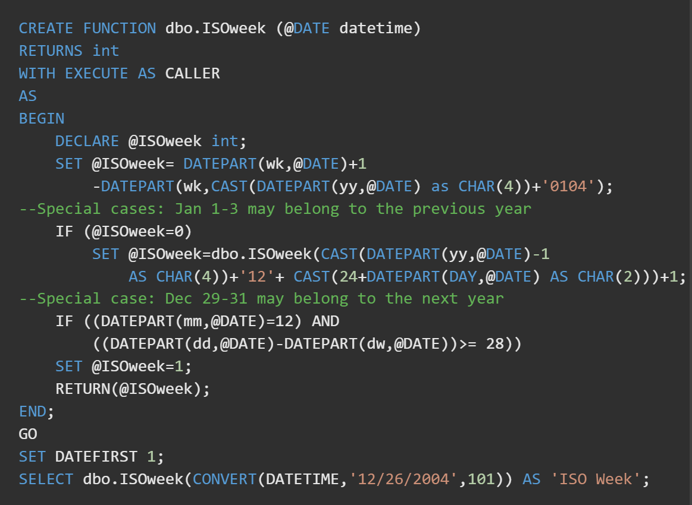

The PL/SQL Function is very similar to PL/SQL Procedure. The main difference between procedure and a function is, a function must always return a value, and on the other hand a procedure may or may not return a value. Except this, all the other things of PL/SQL procedure are true for PL/SQL function too.
Syntax to create a function:
CREATE [OR REPLACE] FUNCTION function_name [parameters]
[(parameter_name [IN | OUT | IN OUT] type [, ...])]
RETURN return_datatype
{IS | AS}
BEGIN
(function_body)
